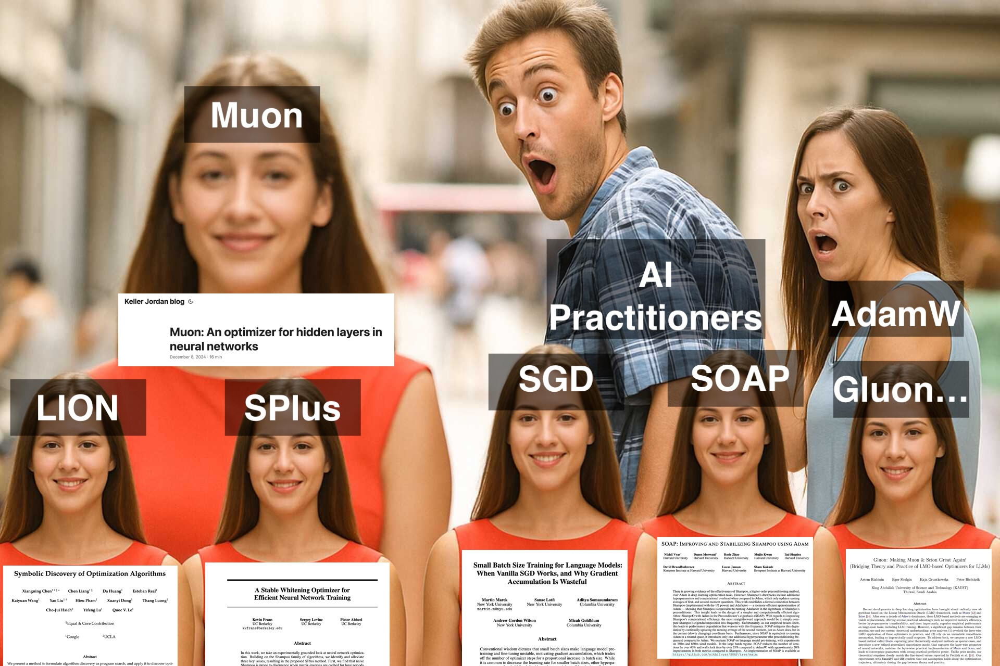
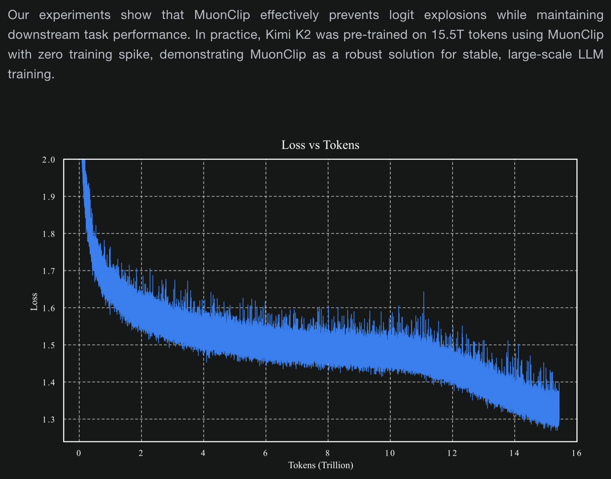
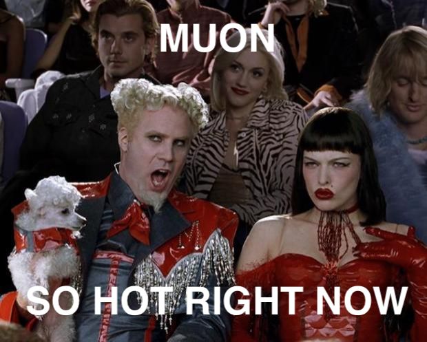
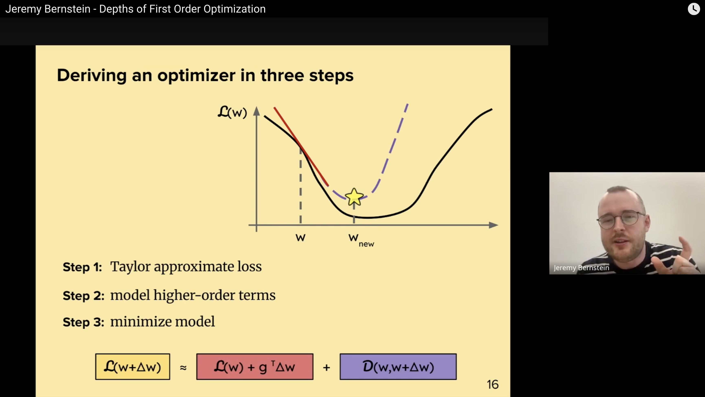
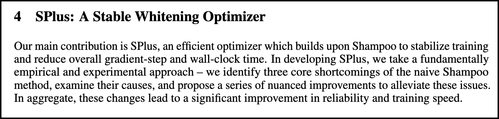

2025-07-12
First-Order Optimizer Fever

Welcome to the long-form blog-post version of this meme.
Ever since Kingma and Ba dropped their evergreen banger Adam: A Method for Stochastic Optimization in December 2014, AI researchers have been struggling hard to invent new and better algorithms for training neural networks. With the notable exception of a tweak to Adam's weight decay rule introduced in 2017 as AdamW, a sea of new algorithms have come and gone without unseating Adam from its throne (despite the numerous lofty claims made by the corresponding publications).
Ever hopeful, however, AI practitioners have been continually eyeing and trying the latest practical optimizer research, and it seems that the past year or so has represented a real change in the state of the art of training big neural networks.
Pragmatic Breakthroughs

With Moonshot bragging in the release blog post for their Kimi K2 model about the stability benefits of using a non-AdamW optimizer on a trillion-parameter model trained on trillions of tokens of data, it has suddenly become pretty difficult to argue that no real progress is happening in optimization of large transformer networks beyond Adam tweaks.
This development raises an important question: Why is today's progress more real than the not-so-real progress claimed in the sea of papers published in late 2010s and early 2020s? I believe the answer to this question lies in a shift of focus for the AI research community as a whole. As recent years have witnessed a shift towards scaling up the training of very large transformer models, the goalposts for optimization researchers have subtly but importantly shifted from the general objective of "making a better version of AdamW" toward the specific objective of "making something that works better than AdamW for training this giant transformer neural network on next-token-prediction." This is an important shift from the theoretical to the practical, and researchers are now taking advantage of a new route to impactful progress by leveraging empiricism to craft optimizers that directly tackle the "train a large transformer" problem.
Muon, Muon, Muon

Muon is perhaps the leading example of how empirically-motivated breakthroughs targeted at improving specific training workloads are actually starting to make real headway against the formidable AdamW baseline. Muon made a splash by powering impressive gains on NanoGPT speed runs and is having a big moment this week as the Kimi K2 model promotes Moonshot's research Muon is Scalable for LLM Training. However, other researchers are also joining the party. Numerous groups are either building on top of Muon's neural-network-aware approach (e.g. Gluon: Making Muon & Scion Great Again!) or taking an empiricist approach of their own by adjusting their algorithms based on transformer-training benchmarks rather than theoretical clarity alone (e.g. A Stable Whitening Optimizer for Efficient Neural Network Training and In Search of Adam's Secret Sauce). If you are an optimization researcher and you have not tried an empiricists approach focused on training transformers, now might be a good time to try it out -- it seems quite effective!
Breakthroughs In Clarity
I hope by now that I have convinced you recent progress in practical neural network optimization appears quite real and valuable. I'm not done, though -- I also want to convince you that we're in for a progress on the theory front as well.
There is a somewhat famous story of how photography professor Jerry Uelsmann found that grading students on the quantity of photos produced actually ended up causing them to produce the highest quality photos of anyone in the class (in other words, being strongly incentivized to embrace a process of trial and error helped accelerate their development as artists). I believe something similar is happening in optimization research right now, with empirically-motivated research leading to greater theoretical clarity.
For example, I claim that Muon kingpin Jeremy Bernstein is not operating at a crappier level of theoretical depth because of his focus on GPT speed runs. Rather, I believe he's actually actually deepening his focus onto the parts of the theory that actually matter as highlighted by experimental feedback, allowing him to make the theoretical contributions that actually matter to the field. You can see this phenomenon in a recent talk he gave on first-order optimization: The clarity and generality of the material far surpasses anything I had in my studies as a university student.
 I would have paid good money for a slide like this to show up in my optimization class in college.
It's not just the Muon hype train that's benefitting from this approach, other groups are catching on. The SPlus paper [8] is full of clear explanations of theoretically deep material while also openly admitting that the core improvements of their new algorithm were largely derived from an experimental rather than analytical approach.

Conclusion
The era of AdamW as the dominant paradigm for optimizing training giant transformer neural networks over giant datasets may be coming to a close. Though extensive empirical experimentation is a key ingredient in several of the most exciting challenger algorithms, the experimentally-informed papers coming out in recent months are some of the most theoretically clear and thoughtful that I have seen in years. Now is a wonderful time to turn your head back and check out some of these exciting new developments, and unlike the meme, your AdamW optimizer will not actually be jealous of the lost attention.